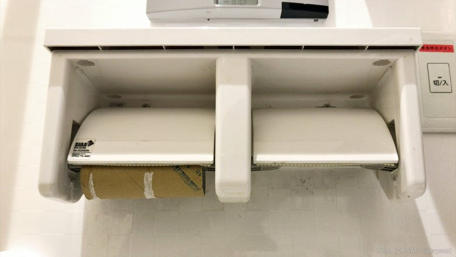

열거자와 패턴 매칭
2020년 10월 6일
열거자란?
- 여러종류의 값 선택지가 있지만, 그 중 단 한 값을 가져야 하는 경우를 표현하기 위한 데이터 타입
- 앞에서 배운 구조체랑 결합하여 좀더 편하게 여러 데이터 형식을 만들 수 있음
#![allow(unused)] fn main() { enum IpAddr { V4(u8,u8,u8,u8), //4개 정수 튜플 구조체를 가지게 된다. V6(String) //문자열을 값으로 가지게 된다. } }
Null
- 값이 비어있음을 표현하는 값
- 왜 이런 값이 필요할까?
- 값이 들어가야 하는 건 알지만 어떤 값이 들어가야 할지 모를 때
- 값이 아직 들어가지 않았음을 표현할 때

Null의 해악 [1]
- 그렇지만 Null은 너무 무분별하게 쓰였으며, 심지어 모든 타입에 대응되는 단 하나의 특이한 값이라는 특징 때문에 끔찍한 재앙을 가져왔습니다.
- 가장 끔찍한 예시로, 문자열이 존재하지 않는 C에서는 문자 배열의 끝에 NULL을 넣는 것으로 문자열의 끝을 표현합니다.
- 모든 값에 대응되는 특성상 원래 의미대로면 Null 내지는 NullException을 반환해야할 IndexOf 같은 경우도 대부분의 프로그래밍 언어에서 -1을 반환하는 식으로 작동합니다.
- 모든 값이 Null이 될 필요도 없고, 되면 위험하지만, 될 수 있기 때문에 Null을 따로 체크해줘야 합니다.
Option : Null에 대한 거의 완벽한 해결책
- Null이 의미하는 값이 없는 값이라는 건 구현하다보면 피할 수 없는 존재입니다.
- 그렇다면 이를 어떻게 해결할까요? 바로 값이 없을 수 있는 데이터를 값이 있는 경우와 아닌 경우로 나누면 됩니다.
- 이것이 바로 Option 열거자가 필요한 이유입니다.
#![allow(unused)] fn main() { enum Option<T> { //T에는 데이터 타입이 들어가며, 각 데이터 타입에 대응되는 코드를 알아서 컴파일러가 만들어 줍니다. Some<T>, None } }
match 흐름 제어 연산자
- 다른 언어의 switch case문과 비슷하게 작동
- 그렇지만 어떠한 변수라도 들어갈 수 있는 swtich case와는 다르게, 열거자만 들어갈 수 있음
#![allow(unused)] fn main() { fn value_in_cents(coin: &Coin) -> u32 { match coin { Coin::Penny => 1, //1은 표현식 Coin::Nickle => 5, Coin::Dime => 10, Coin::Quarter => { println!("쿼티입니다"); 25 } } } fn is_dime_or_quarter(coin: &Coin) -> bool { match coin { Coin::Dime => true, Coin::Quarter => true, _ => false, } } fn is_dime(coin: &Coin) -> bool { if let Coin::Dime = coin { true } else { false } } }
Options::Some과 Match의 활용 : 에러 없는 정수 나누기[2]
#![allow(unused)] fn main() { // An integer division that doesn't `panic!` fn checked_division(dividend: i32, divisor: i32) -> Option<i32> { if divisor == 0 { // Failure is represented as the `None` variant None } else { // Result is wrapped in a `Some` variant Some(dividend / divisor) } } // This function handles a division that may not succeed fn try_division(dividend: i32, divisor: i32) { // `Option` values can be pattern matched, just like other enums match checked_division(dividend, divisor) { None => println!("{} / {} failed!", dividend, divisor), Some(quotient) => { println!("{} / {} = {}", dividend, divisor, quotient) }, } } }
참고문헌
[1] P. Draper, “The worst mistake of computer science,” Lucidchart, Aug. 31, 2015. https://www.lucidchart.com/techblog/2015/08/31/the-worst-mistake-of-computer-science/ (accessed Sep. 30, 2020).
[2]“Option - Rust By Example.” https://doc.rust-lang.org/rust-by-example/std/option.html (accessed Sep. 30, 2020).